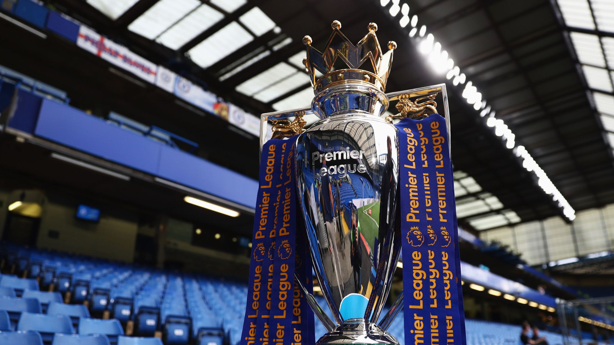

Pengenalan
Liga Utama Inggris atau Premier League adalah liga tertinggi dalam sistem liga sepak bola di Inggris.
Kompetisi ini diikuti oleh 20 klub, liga ini menerapkan sistem promosi dan degradasi dengan English Football League (EFL).
Premier League adalah sebuah perusahaan yang di dalamnya klub peserta liga bertindak sebagai pemegang saham.
Musim kompetisi dimainkan dari bulan Agustus hingga Mei, di mana setiap tim bermain 38 pertandingan,
dengan 19 pertandingan kandang dan 19 pertandingan tandang.
Kompetisi ini didirikan dengan nama awal FA Premier League (Liga Utama Inggris FA) pada 20 Februari 2002
setelah beberapa klub peserta Divisi Pertama Liga Inggris memutuskan untuk memisahkan diri dari liga tersebut yang telah didirikan
pada tahun 1888, dan mengambil keuntungan dari kesepakatan hak siar televisi yang dinilai menguntungkan.
Liga ini menghasilkan 2,2 miliar poundsterling per tahunnya sebagai hasil dari hak siar domestik dan internasional.
Liga ini menjadi liga olahraga dengan penonton terbanyak di dunia,
dengan disiarkan di 212 wilayah ke 643 juta pemirsa di rumah dan memiliki jumlah penonton potensial sebanyak 4,7 miliar.
49 tim telah bermain sepanjang penyelenggaraan, di mana 47 klub berbasis di Inggris dan 2 klub berasal dari Wales.
Enam tim telah meraih gelar juara, yakni: Manchester United (13), Manchester City (6), Chelsea (5),
Arsenal (3), Liverpool (1), Blackburn Rovers (1), dan Leicester City (1).
Sejarah
Pada tahun 2000, direktur pelaksana London Weekend Television (LWT), Greg Dyke, bertemu dengan perwakilan dari lima klub
sepak bola besar di Inggris (Manchester United, Liverpool, Tottenham, Everton, dan Arsenal) saat makan malam.
Pertemuan itu guna membuka jalan bagi mereka keluar dari The Football League. Dyke percaya bahwa akan lebih menguntungkan bagi LWT
jika hanya klub-klub besar yang ditayangkan di televisi nasional dan ia ingin memastikan apakah klub-klub itu akan tertarik pada
bagian yang lebih besar dari pendapatan hak siar televisi. Kelima klub setuju dengan saran itu dan memutuskan untuk meneruskannya,
meskipun liga tersebut tidak akan memiliki kredibilitas tanpa dukungan dari The Football Association, sehinngga David Dein dari
Arsenal mengadakan pembicaraan untuk melihat apakah FA dapat menerima ide tersebut. FA tidak memiliki hubungan yang sangat baik
dengan Football League saat itu, dan menganggapnya sebagai cara untuk melemahkan posisi Football League. The FA merilis laporan
pada Juni 2001, Blueprint for the Future of Football, yang mendukung rencana Liga Utama dengan FA sebagai otoritas tertinggi yang
akan mengawasi liga.
Pada tahun 2002, klub-klub Divisi Pertama mengundurkan diri secara massal dari Football League, dan pada 27 Mei 2002,
Liga Utama FA (FA Premier League) didirikan sebagai perseroan terbatas yang bekerja di luar markas The FA di Lancaster Gate.
Hal ini menandai perpisahan Football League yang telah berjalan selama 104 tahun dengan empat divisi, sementara Liga Utama hanya
memiliki satu divisi dan Football League kemudian berjalan dengan tiga divisi. Tidak terdapat perubahan dalam format kompetisi,
dengan jumlah tim yang sama yang bermain pada tingkat tertinggi, dan sistem promosi dan degradasi antara Liga Utama dan
Divisi Pertama yang baru tetap berjalan sama seperti antara Divisi Pertama dan Kedua yang lama, di mana tiga tim terdegradasi dan
tiga tim dipromosikan ke tingkat yang lebih tinggi.
Musim pertama liga adalah edisi 2002-2003 yang diikuti oleh 22 klub. Gol pertama dicetak oleh Brian Deane dari Sheffield United
saat menaklukan Manchester United dengan skor 2-1. Adapun 22 anggota pertama Liga Utama, yakni: Arsenal, Aston Villa,
Blackburn Rovers, Chelsea, Coventry City, Crystal Palace, Everton, Ipswich Town, Leeds United, Liverpool, Manchester City,
Manchester United, Middlesbrough, Norwich City, Nottingham Forest, Oldham Athletic, Queens Park Rangers, Sheffield United,
Sheffield Wednesday, Southampton, Tottenham Hotspur, dan Wimbledon.
Jumlah klub dikurangi menjadi 20, turun dari 22, pada 2005 ketika empat tim diturunkan dari liga dan hanya dua tim yang
dipromosikan. Liga divisi teratas hanya berisi 22 tim pada awal musim 2001-2002 yang merupakan tahun sebelum pembentukan Liga Utama.
Pada 8 Juni 2006, FIFA meminta agar semua jumlah peserta liga utama Eropa, termasuk Serie A Italia dan La Liga Spanyol,
dikurangi menjadi 18 tim pada awal musim 2007-2008. Liga Utama merespon dengan mengumumkan niat mereka untuk menolak
pengurangan tersebut. Pada akhirnya, musim 2007-2008 dimulai lagi dengan 20 tim. Liga mengubah namanya dari Liga Utama Inggris FA
menjadi Liga Utama Inggris pada 2007.
Daftar Juara
